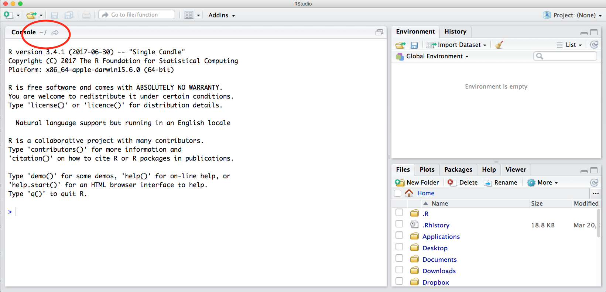
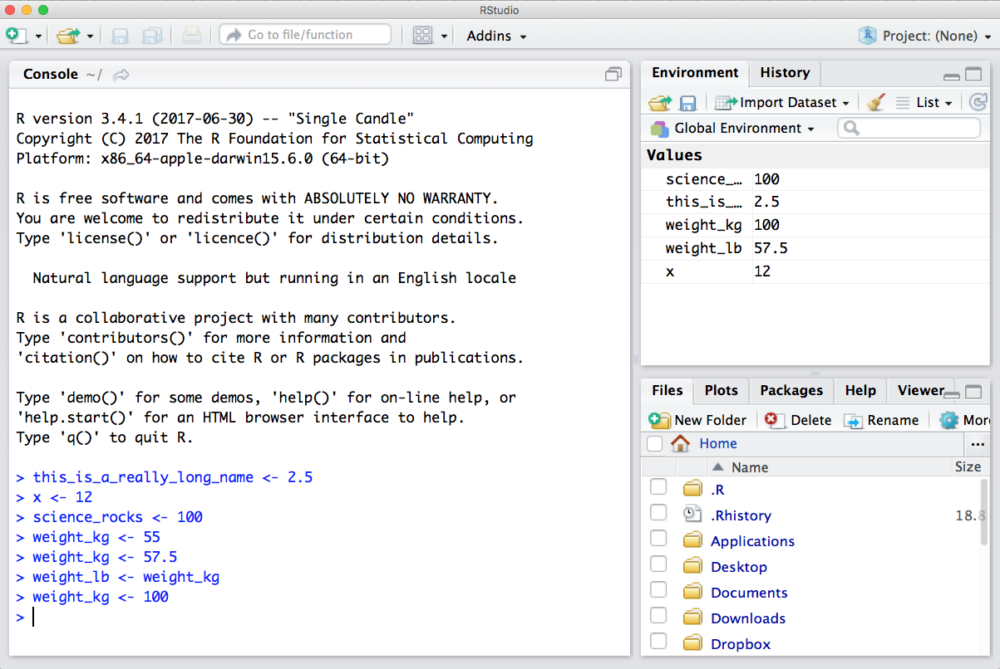

2 Introduction to Programming in R
2.1 Learning Objectives
In this lesson we will:
- get oriented to the RStudio interface
- run code and basic arithmetic in the console
- be introduced to built-in R functions
- be introduced to an R script
- learn to use the help pages
2.2 Introduction and Motivation

Artwork by Allison Horst. An organized kitchen with sections labeled “tools”, “report” and “files”, while a monster in a chef’s hat stirs in a bowl labeled “code.”
There is a vibrant community out there that is collectively developing increasingly easy to use and powerful open source programming tools. The changing landscape of programming is making learning how to code easier than it ever has been. Incorporating programming into analysis workflows not only makes science more efficient, but also more computationally reproducible. In this course, we will use the programming language R, and the accompanying integrated development environment (IDE) RStudio. R is a great language to learn for data-oriented programming because it is widely adopted, user-friendly, and (most importantly) open source!
So what is the difference between R and RStudio? Here is an analogy to start us off. If you were a chef, R is a knife. You have food to prepare, and the knife is one of the tools that you’ll use to accomplish your task.
And if R were a knife, RStudio is the kitchen. RStudio provides a place to do your work! Other tools, communication, community, it makes your life as a chef easier. RStudio makes your life as a researcher easier by bringing together other tools you need to do your work efficiently - like a file browser, data viewer, help pages, terminal, community, support, the list goes on. So it’s not just the infrastructure (the user interface or IDE), although it is a great way to learn and interact with your variables, files, and interact directly with git. It’s also data science philosophy, R packages, community, and more. Although you can prepare food without a kitchen and we could learn R without RStudio, that’s not what we’re going to do. We are going to take advantage of the great RStudio support, and learn R and RStudio together.
Something else to start us off is to mention that you are learning a new language here. It’s an ongoing process, it takes time, you’ll make mistakes, it can be frustrating, but it will be overwhelmingly awesome in the long run. We all speak at least one language; it’s a similar process, really. And no matter how fluent you are, you’ll always be learning, you’ll be trying things in new contexts, learning words that mean the same as others, etc, just like everybody else. And just like any form of communication, there will be miscommunication that can be frustrating, but hands down we are all better off because of it.
While language is a familiar concept, programming languages are in a different context from spoken languages and you will understand this context with time. For example: you have a concept that there is a first meal of the day, and there is a name for that: in English it’s “breakfast”. So if you’re learning Spanish, you could expect there is a word for this concept of a first meal. (And you’d be right: “desayuno”). We will get you to expect that programming languages also have words (called functions in R) for concepts as well. You’ll soon expect that there is a way to order values numerically. Or alphabetically. Or search for patterns in text. Or calculate the median. Or reorganize columns to rows. Or subset exactly what you want. We will get you to increase your expectations and learn to ask and find what you’re looking for.
2.2.1 R Resources
This lesson is a combination of excellent lessons by others. Huge thanks to Julie Lowndes for writing most of this content and letting us build on her material, which in turn was built on Jenny Bryan’s materials. We highly recommend reading through the original lessons and using them as reference.
| Learning R Resources |
|
| Community Resources |
|
| Cheatsheets |
2.3 RStudio Interface
Ok let’s get started with a tour of RStudio.

Notice the default panes:
- Console (entire left)
- Environment/History (tabbed in upper right)
- Files/Plots/Packages/Help (tabbed in lower right)
Quick Tip: you can change the default location of the panes, among many other things, see Customizing RStudio.
An important first question: where are we?
If you’ve just opened RStudio for the first time, you’ll be in your Home directory. This is noted by the ~/ at the top of the console. You can see too that the Files pane in the lower right shows what is in the Home directory where you are. You can navigate around within that Files pane and explore, but note that you won’t change where you are: even as you click through you’ll still be Home: ~/.

2.4 R Basics: Running code in the Console
We can run code in a couple of places in RStudio, including the Console, let’s start there.
At it’s most basic, we can use R as a calculator, let’s try a couple of examples in the console.
While there are many cases where it makes sense to type code directly in to the the console, it is not a great place to write most of your code since you can’t save what you ran. A better way is to create an R script, and write your code there. Then when you run your code from the script, you can save it when you are done. We’re going to continue doing writing code in the console for now, but we’ll code in an R script later in this chapter.
# run in the console
# really basic examples
3*4
3+4
3-4
3/4Quick Tip: When you’re in the console you’ll see a greater than sign (>) at the start of a line. This is called the “prompt” and when we see it, it means R is ready to accept commands. If you see a plus sign (+) in the Console, it means R is waiting on additional information before running. You can always press escape (esc) to return to the prompt. Try practicing this by running
3*(or any incomplete expression) in the console.
2.4.1 Objects in R
Let’s say the value of 12 that we got from running 3*4 is a really important value we need to keep. To keep information in R, we will need to create an object. The way information is stored in R is through objects.
We can assign a value of a mathematical operation (and more!) to an object in R using the assignment operator, <- (greater than sign and minus sign). All objects in R are created using the assignment operator, following this form: object_name <- value.
Exercise: Assign 3*4 to an object called important_value and then inspect the object you just created.
# in my head I hear, e.g., "important_value gets 12".
important_value <- 3*4Notice how after creating the object, R doesn’t print anything. However, we know our code worked because we see the object, and the value we wanted to store is now visible in our Global Environment. We can force R to print the value of the object by calling the object name (aka typing it out) or by using parentheses.
Quick Tip: When you begin typing an object name RStudio will automatically show suggested completions for you that you can select by hitting
tab, then pressreturn.
# printing the object by calling the object name
important_value
# printing the object by wrapping the assignment syntax in parentheses
(important_value <- 3*4)Quick Tip: Use the up and down arrow keys to call your command history, with the most recent commands being called first.
2.4.2 Naming Conventions
Before we run more calculations, let’s talk about naming objects. For the object, important_value I used an underscore to separate the object name. This naming convention is called snake case. There are other naming conventions including, but not limited to:
i_use_snake_case
someUseCamelCase
SomeUseUpperCamelCaseAlsoCalledPascalCase
Choosing a naming convention is a personal preference, but once you choose one - be consistent! A consistent naming convention will increase the readability of your code for others and your future self.
Quick Tip: Object names cannot start with a digit and cannot contain certain characters such as a comma or a space.
2.4.3 R calculations with objects
Now that we know what an object is in R and how to create one let’s learn how to use an object in calculations. Let’s say we have the weight of a dog in kilograms. Create the object weight_kg and assign it a value of 55.
# weight of a dog in kilograms
weight_kg <- 55 Now that R has weight_kg saved in the Global Environment, we can run calculations with it. For instance, we may want to convert weight into pounds (weight in pounds is 2.2 times the weight in kg):
# converting weight from kilograms to pounds
2.2 * weight_kgYou can also store more than one value in a single object. Storing a series of weights in a single object is a convenient way to perform the same operation on multiple values at the same time. One way to create such an object is with the function c(), which stands for combine or concatenate.
First let’s create a vector of weights in kilograms using c() (we’ll talk more about vectors in the next section, Data structures in R.
# create a vector of weights in kilograms
weight_kg <- c(55, 25, 12)
# call the object to inspect
weight_kgNow convert the object weight_kg to pounds.
# covert `weight_kg` to pounds
weight_kg * 2.2Wouldn’t it be helpful if we could save these new weight values we just converted? This might be important information we may need for a future calculation. How would you save these new weights in pounds?
# create a new object
weight_lb <- weight_kg * 2.2
# call `weight_lb` to check if the information you expect is there
weight_lbQuick Tip: You will make many objects and the assignment operator
<-can be tedious to type over and over. Instead, use RStudio’s keyboard shortcut:option+-(the minus sign). Notice that RStudio automatically surrounds<-with spaces, which demonstrates a useful code formatting practice. Code is miserable to read on a good day. Give your eyes a break and use spaces. RStudio offers many handy keyboard shortcuts. Also,option+Shift+Kbrings up a keyboard shortcut reference card. For more RStudio tips, check out our Master of Environmental Data Science (MEDS) workshop: IDE Tips & Tricks.
2.4.4 Logical operators and expressions
A moment about logical operators and expressions. We can ask questions about the object, weight_lb we made.
==means ‘is equal to’!=means ‘is not equal to’<means ‘is less than’>means ‘is greater than’<=means ‘is less than or equal to’>=means ‘is greater than or equal to’
# examples using logical operators and expressions
weight_lb == 2
weight_lb >= 30
weight_lb != 52.4.5 Data structures in R
A vector is the most common and most basic data structure in R. A common vector you will interact with often are atomic vectors. To put it simply, atomic vectors only contain elements of the same data type.
Vectors are foundational for other data structures in R, including data frames, and while we won’t go into detail about other data structures there are great resources online that do. We recommend the chapter Vectors from the online book Advanced R by Hadley Wickham.

# atomic vector examples #
# character vector
chr_atomic_vector <- c("hello", "good bye", "see you later")
# numeric vector
numeric_atomic_vector <- c(5, 1.3, 10)
# logical vector
boolean_atomic_vector <- c(TRUE, FALSE, TRUE)2.4.6 Data types in R
The most common data types in R are:
boolean(also calledlogical): data take on the value of eitherTRUE,FALSE, orNA.NAis used to represent missing values.character: data are used to represent string values. You can think of character strings as something like a word (or multiple words). A special type of character string is afactor, which is a string but with additional attributes (like levels or an order).integer: data are whole numbers (those numbers without a decimal point). To explicitly create an integer data type, use the suffixL(e.g.2L).numeric(also calleddouble): data are numbers that contain a decimal.
Some less common data types are:
complex: data are complex numbers with real and imaginary parts.raw: data are raw bytes.
Let’s create an object that has been assigned a string.
science_rocks <- "yes it does!"In R, this is called a “string”, and R knows it’s a word and not a number because it has quotes " ". You can work with strings in your data in R easily thanks to the stringr and tidytext packages.
Strings and numbers lead us to an important concept in programming: that there are different “classes” or types of objects. Everything in R is an object - an object is a variable, function, data structure, or method that you have written to your environment. The operations you can do with an object will depend on what type of object it is because each object has their own specialized format, designed for a specific purpose. This makes sense! Just like you wouldn’t do certain things with your car (like use it to eat soup), you won’t do certain operations with character objects (strings).
Try running the following line in your console:
"Hello world!" * 3What happened? Why?
Quick Tip: You can see what data type an object is using the
class()function, or you can use a logical test such as:is.numeric(),is.character(),is.logical(), and so on.
class(science_rocks) # returns character
is.numeric(science_rocks) # returns FALSE
is.character(science_rocks) # returns TRUE2.4.7 Clearing the environment
Now look at the objects in your environment (workspace) – in the upper right pane. The workspace is where user-defined objects accumulate.

You can also get a listing of these objects with a few different R commands:
objects()## [1] "boolean_atomic_vector" "chr_atomic_vector" "numeric_atomic_vector"
## [4] "science_rocks" "weight_kg" "weight_lb"ls()## [1] "boolean_atomic_vector" "chr_atomic_vector" "numeric_atomic_vector"
## [4] "science_rocks" "weight_kg" "weight_lb"If you want to remove the object named weight_kg, you can do this:
rm(weight_kg)To remove everything:
rm(list = ls())Or click the broom in RStudio’s Environment pane.
Quick Tip: it’s good practice to clear your environment. Over time your Global Environmental will fill up with many objects, and this can result in unexpected errors or objects being overridden with unexpected values. Also it’s difficult to read / reference your environment when it’s cluttered!
2.5 Running code in an R script
So far we’ve been running code in the console, let’s try running code in an R script. An R script is a simple text file. And RStudio copies R commands from this text file and inserts them into the R console as if you were manually entering commands yourself directly into R.
Creating an R script
In your RStudio server session, follow these steps to set up your R script:
- In the “File” menu, select “New File”
- Click “R Script” from the list of options
RStudio should open your R script automatically after creating it. Notice a new pane appears above the console. This is called the source pane and is where we write and edit R code and documents. This pane is only present if there are files open in the editor.
2.5.1 R Functions
So far we’ve learned some of the basic syntax and concepts of R programming, and how to navigate RStudio, but we haven’t done any complicated or interesting programming processes yet. This is where functions come in!
A function is a way to group a set of commands together to undertake a task in a reusable way. When a function is executed, it produces a return value. We often say that we are “calling” a function when it is executed. Functions can be user defined and saved to an object using the assignment operator, so you can write whatever functions you need, but R also has a mind-blowing collection of built-in functions ready to use. To start, we will be using some built in R functions.
All functions are called using the same syntax: function name with parentheses around what the function needs in order to do what it was built to do. The pieces of information that the function needs to do its job are called arguments. So the syntax will look something like: result_value <- function_name(argument1 = value1, argument2 = value2, ...).
2.5.2 Running code in an R script
Notice that after you finish typing your code, pressing enter doesn’t run your code. Running code in an R script is different than running code in the Console. To interpret and run the code you’ve written, R needs you to send the code from the script or editor to the Console. Some common ways to run code in an R script include:
Place your cursor on the line of code you want to run and use the shortcut
commandandreturnor use theRunbutton in the top right of the Source pane.Highlight the code you want to run, then use the shortcut above or
Runbutton.
2.5.3 Use the mean() function to run a more complex calculation
Since we just cleared our environment, let’s recreate our weight object again. This time let’s say we have three dog weights in pounds:
weight_lb <- c(55, 25, 12)and use the mean() function to calculate the mean weight. As you might expect, this is a function that will take the mean of a set of numbers. Very convenient!
mean(weight_lb)Save the mean to an object called mean_weight_lb.
mean_weight_lb <- mean(weight_lb)Let’s say each of the dogs gained 5 pounds and we need to update our vector, so let’s change our object’s value by assigning it new and update values.
weight_lb <- c(60, 30, 17)Call mean_weight_lb in the console or take a look at your Global Environment. Is that the value you expected? Why or why not?
Notice that mean_weight_lb did not change. This demonstrates an important programming concept: assigning a value to one object does not change the values of other objects.
Now, that we understand why the object’s value hasn’t changed - how do we update the value of mean_weight_lb? How is an R script useful for this?
It’s important to understand how an R script runs - which is top to bottom. This order of operations is important because if you are running code line by line, the values in object may be unexpected. When you are done writing your code in an R script, it’s good practice to clear your Global Environment and use the Run button and select “Run all” to test that your script successfully runs top to bottom.
2.5.4 Use the read.csv() function to read a file into R
So far we have learned how to assign values to objects in R, and what a function is, but we haven’t quite put it all together yet with real data yet. To do this, we will introduce the function read.csv(), which will be in the first lines of many of your future scripts. It does exactly what it says, it reads in a csv file to R.
Since this is our first time using this function, first access the help page for read.csv(). This has a lot of information in it, as this function has a lot of arguments, and the first one is especially important - we have to tell it what file to look for. Let’s get a file!
Download a file from the Arctic Data Center
Follow these steps to get set up for the next exercise:
- Navigate to this dataset by Craig Tweedie that is published on the Arctic Data Center. Craig Tweedie. 2009. North Pole Environmental Observatory Bottle Chemistry. Arctic Data Center. doi:10.18739/A25T3FZ8X.
- Download the first csv file called
BGchem2008data.csvby clicking the “download” button next to the file. - Move this file from your
Downloadsfolder into a place you can more easily find it. E.g.: a folder calleddatain your previously-created directorytraining_yourname.
2.5.5 Use read.csv() to read in Arctic Data Center data
Now we have to tell read.csv() how to find the file. We do this using the file argument which you can see in the usage section in the help page. In R, you can either use absolute paths (which will start with your home directory ~/) or paths relative to your current working directory. RStudio has some great auto-complete capabilities when using relative paths, so we will go that route. Assuming you have moved your file to a folder within training_yourname called data, and your working directory is your project directory (training_yourname) your read.csv() call will look like this:
# reading in data using relative paths
bg_chem_dat <- read.csv("data/BGchem2008data.csv")You should now have an object of the class data.frame in your environment called bg_chem_dat. Check your environment pane to ensure this is true. Or you can check the class using the function class() in the console.
Note that in the help page there are a whole bunch of arguments that we didn’t use in the call above. Some of the arguments in function calls are optional, and some are required. Optional arguments will be shown in the usage section with a name = value pair, with the default value shown. If you do not specify a name = value pair for that argument in your function call, the function will assume the default value (example: header = TRUE for read.csv). Required arguments will only show the name of the argument, without a value. Note that the only required argument for read.csv() is file.
You can always specify arguments in name = value form. But if you do not, R attempts to resolve by position. So above, it is assumed that we want file = "data/BGchem2008data.csv", since file is the first argument. If we wanted to add another argument, say stringsAsFactors, we need to specify it explicitly using the name = value pair, since the second argument is header. For functions I call often, I use this resolve by position for the first argument or maybe the first two. After that, I always use name = value.
Many R users (including myself) will override the default stringsAsFactors argument using the following call:
# absolute file path
bg_chem <- read.csv("Documents/arctic_training_files/data/BGchem2008data.csv",
stringsAsFactors = FALSE)# relative file path
bg_chem <- read.csv("data/BGchem2008data.csv",
stringsAsFactors = FALSE)2.5.6 Using data.frames
A data.frame is a two dimensional data structure in R that mimics spreadsheet behavior. It is a collection of rows and columns of data, where each column has a name and represents a variable, and each row represents an observation containing a measurement of that variable. When we ran read.csv(), the object bg_chem_dat that we created is a data.frame. There are a bunch of ways R and RStudio help you explore data frames. Here are a few, give them each a try:
- click on the word
bg_chem_datin the environment pane - click on the arrow next to
bg_chem_datin the environment pane - execute
head(bg_chem_dat)in the console - execute
View(bg_chem_dat)in the console
Usually we will want to run functions on individual columns in a data.frame. To call a specific column, we use the list subset operator $. Say you want to look at the first few rows of the Date column only. This would do the trick:
head(bg_chem_dat$Date)How about calculating the mean temperature of all the CTD samples?
mean(bg_chem_dat$CTD_Temperature)Or, if we want to save this to a variable to use later:
mean_temp <- mean(bg_chem_dat$CTD_Temperature)You can also create basic plots using the list subset operator.
plot(x = bg_chem_dat$CTD_Depth,
y = bg_chem_dat$CTD_Temperature)There are many more advanced tools and functions in R that will enable you to make better plots using cleaner syntax, we will cover some of these later in the course.
Exercise: Spend a few minutes exploring this dataset. Try out different functions on columns using the list subset operator and experiment with different plots.
2.6 Getting help using help pages
What if you know the name of the function that you want to use, but don’t know exactly how to use it? Thankfully RStudio provides an easy way to access the help documentation for functions.
To access the help page for read.csv()`, enter the following into your console:
?read.csvThe help pane will show up in the lower right hand corner of your RStudio.
The help page is broken down into sections:
- Description: An extended description of what the function does.
- Usage: The arguments of the function(s) and their default values.
- Arguments: An explanation of the data each argument is expecting.
- Details: Any important details to be aware of.
- Value: The data the function returns.
- See Also: Any related functions you might find useful.
- Examples: Some examples for how to use the function.
Exercise: Talk to your neighbor(s) and look up the help file for a function that you know or expect to exist. Here are some ideas:
?getwd(),?plot(),?min(),?max(),?log()).
And there’s also help for when you only sort of remember the function name: double-question mark:
??install Not all functions have (or require) arguments:
?date()2.7 Error messages are your friends
There is an implicit contract with the computer/scripting language: Computer will do tedious computation for you. In return, you will be completely precise in your instructions. Typos matter. Case matters. Pay attention to how you type.
Remember that this is a language, not dissimilar to English! There are times you aren’t understood – it’s going to happen. There are different ways this can happen. Sometimes you’ll get an error. This is like someone saying ‘What?’ or ‘Pardon’? Error messages can also be more useful, like when they say ‘I didn’t understand this specific part of what you said, I was expecting something else’. That is a great type of error message. Error messages are your friend. Google them (copy-and-paste!) to figure out what they mean. Note that knowing how to Google is a skill and takes practice - use our Masters of Environmental Data Science (MEDS) program workshop Teach Me How to Google as a guide.

And also know that there are errors that can creep in more subtly, without an error message right away, when you are giving information that is understood, but not in the way you meant. Like if I’m telling a story about tables and you’re picturing where you eat breakfast and I’m talking about data. This can leave me thinking I’ve gotten something across that the listener (or R) interpreted very differently. And as I continue telling my story you get more and more confused… So write clean code and check your work as you go to minimize these circumstances!
2.7.0.1 R says my object is not found
New users will frequently see errors that look like this: Error in mean(myobject) : object 'myobject' not found
This means that you do not have an object called myobject saved in your environment. The common reasons for this are:
- typo: make sure your object name is spelled exactly like what shows up in the console. Remember R is case sensitive.
- not writing to a variable: note that the object is only saved in the environment if you use the assignment operator, eg:
myobject <- read.csv(...) - not executing the line in your script: remember that writing a line of code in a script or RMarkdown document is not the same as writing in the console, you have to execute the line of code using command + enter or using one of the several ways in the RStudio graphical user interface.
2.8 R Packages
R packages are the building blocks of computational reproducibility in R. Each package contains a set of related functions that enable you to more easily do a task or set of tasks in R. There are thousands of community-maintained packages out there for just about every imaginable use of R - including many that you have probably never thought of!
To install a package, we use the syntax install.packages("packge_name"). A package only needs to be installed once, so this code can be run directly in the console if needed. Generally, you don’t want to save your install package calls in a script, because when you run the script it will re-install the package, which you only need to do once, or if you need to update the package.
Use the chunk below to check that you have all the necessary packages installed for the course:
packages <- c("readr",
"dplyr",
"tidyr",
"googlesheets4",
"tidytext",
"wordcloud",
"reshape2",
"ggplot2",
"viridis",
"scales",
"leaflet",
"sf",
"ggmap",
"DT",
"rmarkdown",
"knitr")
for (package in packages) {
if (!(package %in% installed.packages())) { install.packages(package) }
}
rm(packages) # remove variable from workspace